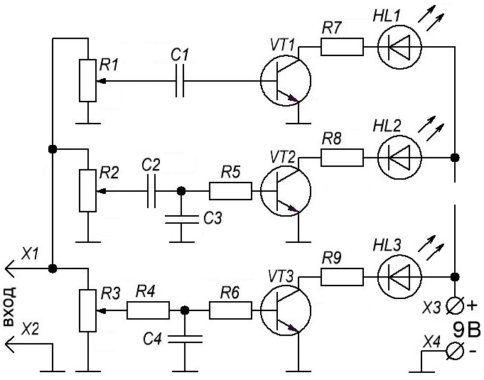

Трехканальная цветомузыкальная установка на светодиодах-2
Данная схема (рис. 1) позволяет с помощью переменных резисторов R1-R3 регулировать чувствительность каждого из каналов, с их помощью задаётся необходимая яркость свечения. Транзисторы VT1–VT3 коммутируют светодиоды.

Таблица 1
| Позиционное обозначение |
Наименование | Номинал | Кол-во | Примечание |
|---|---|---|---|---|
| С1 | Конденсатор | 0,1 мкФ | 1 | |
| C2 | Конденсатор | 0,68 мкФ | 1 | |
| C3 | Конденсатор | 0,15 мкФ | 1 | |
| С4 | Конденсатор | 0,33 мкФ | 1 | |
| HL1 | Светодиод | АЛ307 | 1 | красный |
| HL2 | Светодиод | АЛ307 | 1 | зеленый |
| HL3 | Светодиод | АЛ307 | 1 | синий |
| R1 - R3 | Резистор переменный | 47 кОм | 3 | |
| R4 | Резистор постоянный | 1 кОм | 1 | |
| R5, R6 | Резистор постоянный | 510 Ом | 2 | |
| R7 - R9 | Резистор постоянный | 200 Ом | 3 | |
| VT1 - VT3 | Транзистор биполярный | КТ3102 | 3 | n-p-n BC547, BC337 |
Для увеличения яркости можно использовать отрезки светодиодной ленты. В этом случае применяются транзисторы большей мощности (например, BD139, 2N4923, КТ961).